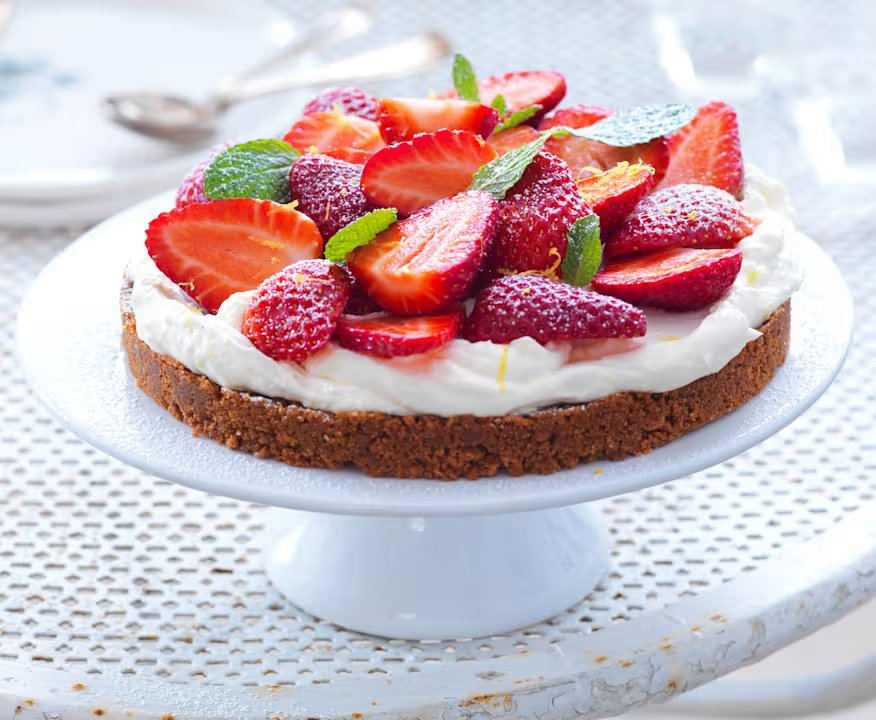

Tarte sans cuisson aux fraises et speculoos
Ingrédients
6×
- 80 g de beurre demi-sel
- 250 g de speculoos
- 50 g de sucre
- 1 citron
- 250 g de mascarpone
- 500 g de fraises
- 10 feuilles de menthe
- 50 g de sucre glace

Préparation
Étape 1
Fondre 80 g de beurre demi-sel 4 min/60ºC/vitesse 1. Ajouter 250 g de speculoos et mixer 10 sec/vitesse 4.
Étape 2
Tasser la pâte dans un moule à charnière (Ø 24 cm) et réserver au frais pour la durcir.
Étape 3
Mixer 50 g de sucre et le zeste de 1 citron 10 sec/vitesse 10. Insérer le fouet, ajouter 250 g de mascarpone et fouetter 1 min/vitesse 3.
Étape 4
Démouler le fond et le garnir de crème. Disposer 500 g de fraises en lamelles, décorer de 10 feuilles de menthe et saupoudrer de 50 g de sucre glace. Servir frais.
Conseils
- Basilic à la place de la menthe.
- Avec les fraises moins belles, faire un tartare : brunoise, 1 cas d’amaretto, 2 cas de sucre vanillé, 30min d’infusion.
Résumé
80 g de beurre demi-sel
250 g de speculoos
Fondre 4 min/60ºC/vitesse 1 mixer 10 sec/vitesse 4
Tasser
50 g de sucre
1 citron
250 g de mascarpone
Mixer 10 sec/vitesse 10 fouetter 1 min/vitesse 3
500 g de fraises
10 feuilles de menthe
50 g de sucre glace
Disposer